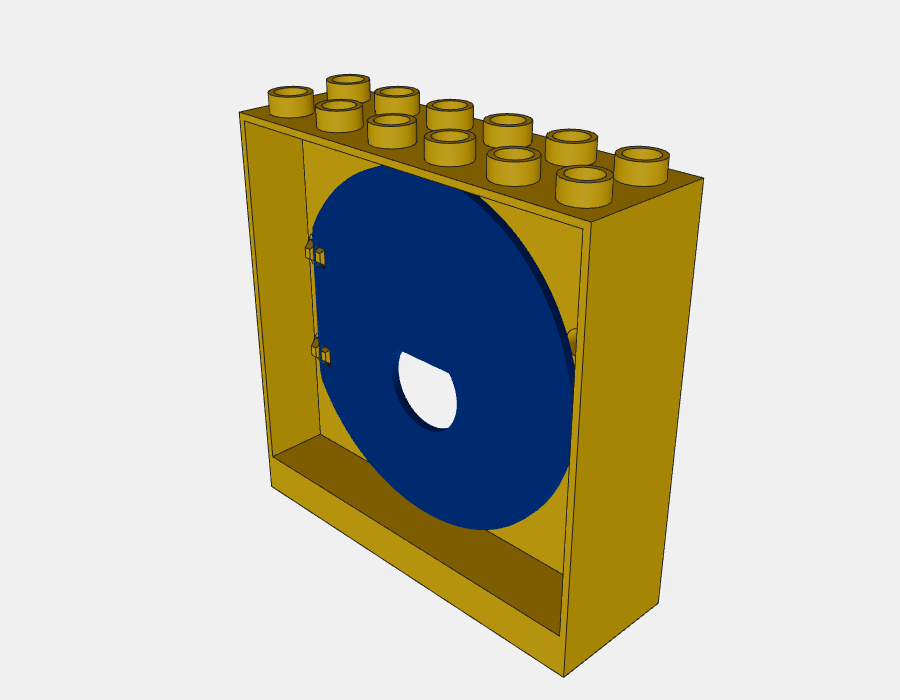
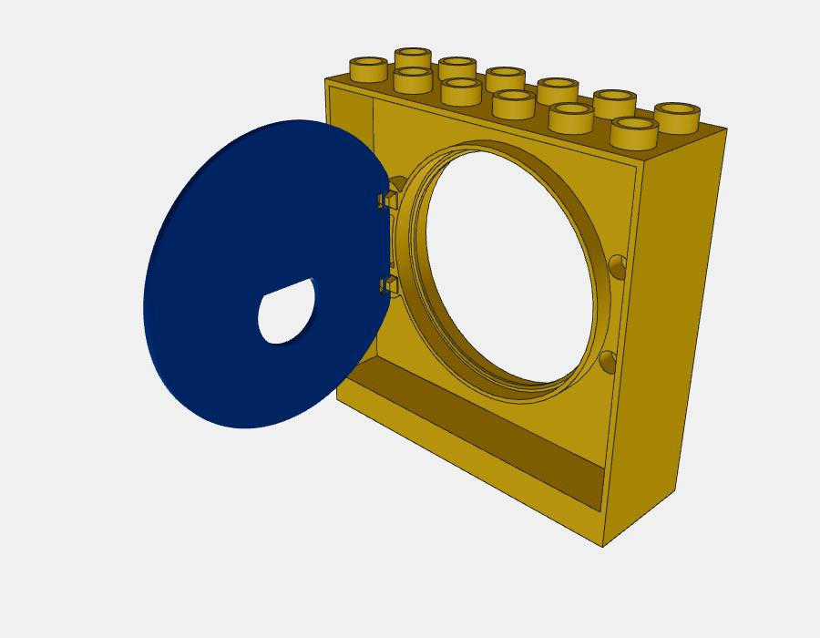
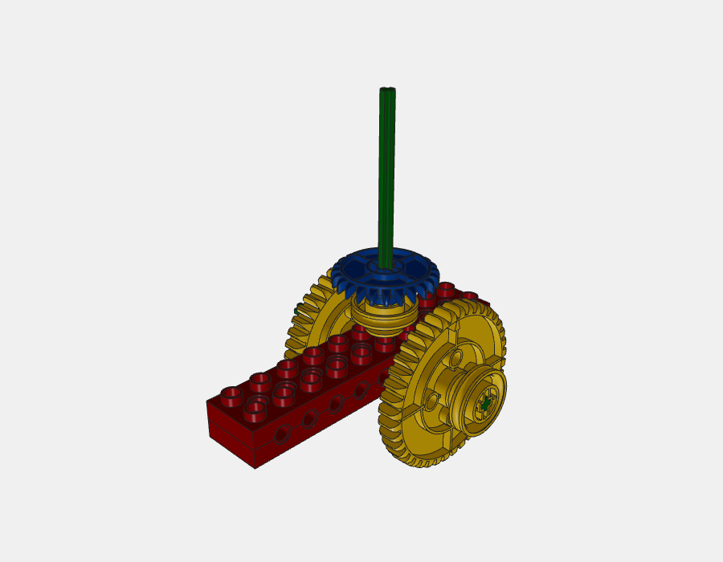
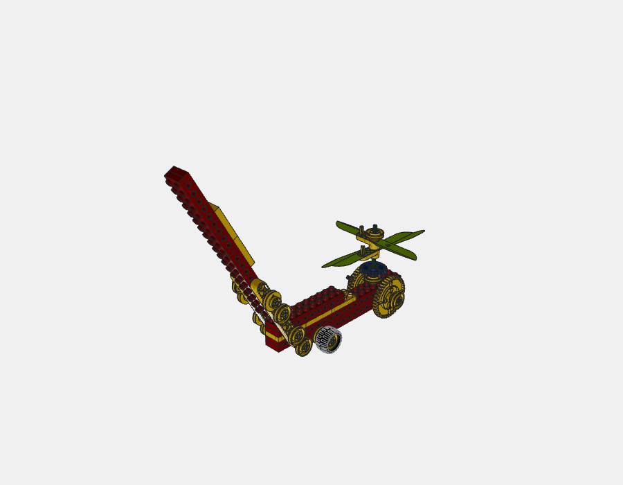

本地草稿，未推送、未发布。修复已进入本地课程源文件；不代表全部待确认课程通过。
小消防车的门在0–60°开度未检出碰撞，75°起会撞旁边座舱/车体。其余三课开门抽样到120°无穿插。塑料公差、轴孔摩擦保持力和承重未实物验证。
旧门网格替换为独立照片重建；铰链间距改为62LDU，采用官方门轴原语与圆润左边缘。门框组合13个角度均无穿插；四课关闭状态无门对外穿插。


普通6529换成朝下的31622冠轮；左大轮单侧驱动，右大轮外移以免锁死。后轴换8L并新增内侧轮毂；新增竖轴支承轮毂落在下梁凸点上，竖轴上移避开横轴。两只上方手柄轮毂翻面避开相邻轮缘。


后轮距不对称，竖轴上端有真实8L轴外露；这些是替代搭法，不声称原图完全一致。新增2只6527、移除1块75349，6529换31622、后轴6522换6521。冠轮靠标准轴孔摩擦定位，和下轮毂留5LDU间隙；未虚构硬止挡。完整转动721相位无齿轮对穿插，反向转动对照会干涉，未用脱啮消除报警。
| 课程预览 | 整课相交候选 | 版本 |
|---|---|---|
| 3-shuang-ceng-ba-shi.ldr | 6 / 78 对 | ece1d2f307e2 |
| 3-xiao-fang-che.ldr | 8 / 201 对 | 6d4536d1c772 |
| 3-xiao-huo-che.ldr | 9 / 123 对 | 0d1c8133d444 |
| 4-wa-li.ldr | 0 / 77 对 | 945e7a082ba4 |
| 5-shou-tui-fei-ji.ldr | 39 / 75 对 | 12d2ee6e748b |
相交候选包括既有轴孔及轮胎接触，也包括尚待判断的问题；不把所有候选都解释为正常套接。其他座舱等干涉继续保留。全部300课当前仍有202课包含候选。